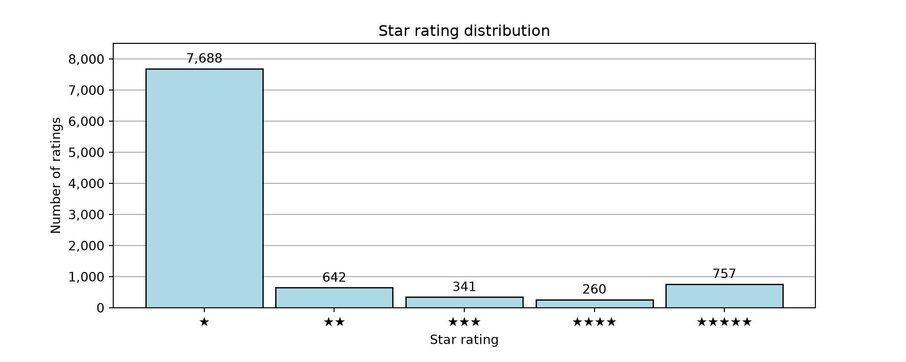
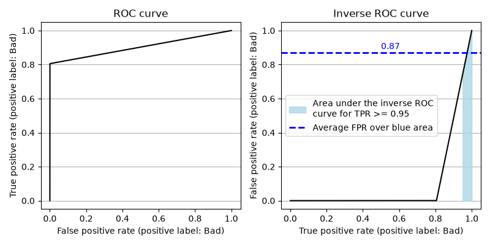
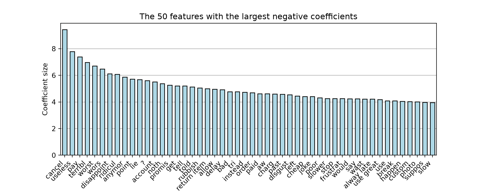

# Standard libraries
import pandas as pd
import numpy as np
import re
import gc
import pickle
# Libraries for plotting
import matplotlib.pyplot as plt
import matplotlib.ticker as ticker
from wordcloud import WordCloud
# Libraries for text cleaning
import contractions
from autocorrect import Speller
import nltk
from nltk.corpus import stopwords
from nltk.tokenize import word_tokenize
from nltk.stem import SnowballStemmer
import emoji
# Machine learning
## Text feature extraction
from sklearn.feature_extraction.text import TfidfTransformer, CountVectorizer
## Cross validation and train-test split
from sklearn.model_selection import RandomizedSearchCV, GridSearchCV, TunedThresholdClassifierCV, StratifiedKFold, train_test_split
## Model metrics
from sklearn.metrics import classification_report, make_scorer, roc_curve, recall_score
## Oversampling
from imblearn.over_sampling import RandomOverSampler
## Pipeline building
from sklearn.preprocessing import FunctionTransformer
from imblearn.pipeline import Pipeline
## Logistic regression
from sklearn.linear_model import LogisticRegression
## Naive Bayes
from sklearn.naive_bayes import GaussianNB
## Random forest
from sklearn.ensemble import RandomForestClassifier
## Standard gradient boosting
from sklearn.ensemble import GradientBoostingClassifier
## LightGBM
import lightgbm as lgbmNote:
To access the source files of this project, please visit https://github.com/dschulz13/amazon_review_classification_python_project.
1 Executive summary
The scores are strongly imbalanced, where the vast majority of the reviews gives a rating of one star.
The naive predictor of simply labelling all reviews as
Badproduces a recall of 1.0 on theBadclass and accuracy of 0.89 on the test set. This comes at the cost of poor performance on theGoodclass. This predictor implies that, in a real-world scenario, all incoming messages would have to be inspected manually.The recommended predictor in the given context is a regularized logistic regression predictor that achieves 0.96 recall on the
Badclass and 0.82 recall on theGoodclass (with overall accuracy of 0.94). In comparison to the naive predictor, using this predictor will misclassify 4% of the negative feedback, while reducing the amount of messages to inspect manually by approx. 12%. Ignoring 4% of negative feedback is still conservative and within the set goal of achieving a recall of at least 0.95. In addition, a logistic regression model is relatively lightweight compared to other models. Hence, this model should be the first choice for practical tests. Following up are the gradient boosting approaches.We identify several strong predictors of customer dissatisfaction. These should be investigated more thoroughly to see, if there are any systematic issues that need to be improved on.
- Cancellation of orders.
- Slow deliveries and delays.
- Poor product quality.
- Poor Amazon customer service.
2 Data
The anonymized dataset amazon_com_reviews_trustpilot_20261026_anon.feather in the GitHub repository dschulz13/dataset-amazon_trustpilot_reviews is considered. It contains all 32,632 English Trustpilot reviews for Amazon.com published between August 27, 2007, and October 26, 2026. The data was originally scraped directly from the Trustpilot webpage of Amazon.com using Python’s Selenium extension.
For the sake of this project, only the available reviews published since January 01, 2025 are used. This approximately gives a cross-sectional overview of recent customer feedback. Filtered this way, 9,688 reviews remain for the analysis. Even though some customers may have produced more than one review during this filtered time period, it is assumed that their reviews are approximately independent and about separate experiences.
Show Python imports
Show Python code
With the following code chunk, the dataset is read into Python and filtered, so that only reviews published on January 01, 2025, or later are kept. Initially, we also optimize memory usage by adjusting selected column data types.
# URL to the data on GitHub
url = 'https://github.com/dschulz13/dataset-amazon_trustpilot_reviews/raw/refs/heads/main/amazon_com_reviews_trustpilot_20261026_anon.feather'
# Read in the data
data_filt = pd.read_feather(url)
# Function to reduce memory usage of data frame
def reduce_df_size(df, verbose = True):
numerics = ['int8', 'int16', 'int32', 'int64', 'float16', 'float32',
'float64']
if verbose:
old_mem = df.memory_usage().sum() / 1024**2
for col in df.columns:
col_type = df[col].dtypes
if col_type in numerics:
c_min = df[col].min()
c_max = df[col].max()
if str(col_type)[:3] == 'int':
if c_min >= np.iinfo(np.int8).min and c_max <= np.iinfo(np.int8).max:
df[col] = df[col].astype(np.int8)
elif c_min >= np.iinfo(np.int16).min and c_max <= np.iinfo(np.int16).max:
df[col] = df[col].astype(np.int16)
elif c_min >= np.iinfo(np.int32).min and c_max <= np.iinfo(np.int32).max:
df[col] = df[col].astype(np.int32)
else:
df[col] = df[col].astype(np.int64)
else:
if c_min >= np.finfo(np.float16).min and c_max <= np.finfo(np.float16).max:
df[col] = df[col].astype(np.float16)
elif c_min >= np.finfo(np.float32).min and c_max <= np.finfo(np.float32).max:
df[col] = df[col].astype(np.float32)
else:
df[col] = df[col].astype(np.float64)
df['User_Country'] = df['User_Country'].astype('category')
df['Review_Date'] = pd.to_datetime(df['Review_Date'], format = '%Y-%m-%d %H:%M:%S', utc = True)
df['Experience_Date'] = pd.to_datetime(df['Experience_Date'], format = '%Y-%m-%d', utc = True)
if verbose:
mem_new = (df.memory_usage().sum() / 1024**2).item()
change_mem = abs(mem_new - old_mem)
rel_mem = 100 * change_mem / old_mem
print(f'Old memory usage: {old_mem:.2f}MB; new memory usage: {mem_new:.2f}MB; reduction of {change_mem:.2f}MB ({rel_mem:.2f}%)')
return df
# Apply reformatting of columns
data_filt['Review_Score'] = data_filt['Review_Score'].astype(int)
data_filt = reduce_df_size(data_filt)Old memory usage: 4.41MB; new memory usage: 2.97MB; reduction of 1.43MB (32.53%)
# Keep observations since 2025-01-01 and reset index
data_filt = (
data_filt[data_filt['Review_Date'] >= '2025-01-01 00:00:00']
.reset_index(drop = True)
)The following code chunk then provides general information about the filtered dataset and its variables.
# Show general information
print(data_filt.info())
print(data_filt[['Review_Date', 'Review_Score']].describe())
print(data_filt['Review_Sentences'][6])A barplot of the star ratings in the filtered dataset can be produced as follows.
star_counts = data_filt['Review_Score'].value_counts().sort_index(ascending = True)
def star_formatter(x, pos):
n_star = int(round(x)) + 1
return '★' * n_star
fig, ax = plt.subplots(1, 1, figsize = (10, 4))
star_counts.plot(kind = 'bar', ax = ax, color = 'lightblue',
edgecolor = 'black', alpha = 1, width = 0.9)
ax.set_xlabel('Star rating');
ax.set_ylabel('Number of ratings');
ax.set_title('Star rating distribution');
ax.yaxis.set_major_formatter(ticker.StrMethodFormatter('{x:,.0f}'));
ax.xaxis.set_major_formatter(ticker.FuncFormatter(star_formatter));
plt.xticks(rotation = 0, ha = 'center');
ax.grid(axis = 'y');
ax.set_axisbelow(True);
ax.set_ylim(0, 8300);
for i in range(0, 5):
ax.text(x = i, y = star_counts.to_numpy()[i].item() + 300,
s = f'{star_counts.to_numpy()[i].item():,}',
ha = 'center', va = 'center');<class 'pandas.DataFrame'>
RangeIndex: 9688 entries, 0 to 9687
Data columns (total 8 columns):
# Column Non-Null Count Dtype
--- ------ -------------- -----
0 User_ID 9688 non-null int16
1 Review_Date 9688 non-null datetime64[us, UTC]
2 Experience_Date 9688 non-null datetime64[us, UTC]
3 User_Name 9688 non-null str
4 User_Country 9688 non-null category
5 Review_Score 9688 non-null int8
6 Review_Title 9688 non-null str
7 Review_Sentences 9551 non-null object
dtypes: category(1), datetime64[us, UTC](2), int16(1), int8(1), object(1), str(2)
memory usage: 923.6+ KB
None Review_Score
count 9688.000000
mean 1.529727
std 1.190940
min 1.000000
25% 1.000000
50% 1.000000
75% 1.000000
max 5.000000['I have to say that they the make mistakes but have always made up for them with me'
"I've gotten things for free because they were late"
'The offer 0% interest for 6 months and everything comes so fast'
'Whenever I order from another company, I realize just how much more efficient and accommodating Amazon is'
"And I hope this doesn't infuriate anyone on here who's had real problems with them, I'm just being honest"
"I almost always come to Trust Pilot to complain but I came here today because I was curious of what Amazon's average review score was and must say that I'm shocked because I can't imagine better customer service."]From the data output, we can see that the dataset has the eight variables User_ID, Review_Date, Experience_Date, User_Name, User_Country, Review_Score, Review_Title, and Review_Sentences. Each row in the dataset is a unique review entry. User_ID is an int variable that uniquely identifies each author (and can be used to see, which person wrote multiple reviews). Review_Date and Experience_Date are both datetime variables. Review_Score is also an int column. User_Name and Review_Title are str columns containing the author’s user name and the the document’s review title, respectively. In contrast, User_Country is a category variable. Review_Sentences is an object column, where in each row it contains a list, whose entries are the different review sentences as strings.
Only Review_Sentences contains missing values sometimes, as review author’s must specify a review title, but they are not obligated to write a review text. Therefore, in 137 instances no review text was written.
The star ratings are apparently strongly skewed / imbalanced. The mean rating is approx. 1.53, the median and even the 75th percentile of the observed rating distribution are simply 1.

Figure 2.1 supports the previous statement on the strong imbalance in the data: 7,688 reviews are one-star reviews, where customers were as dissatisfied as possible. The remaining 2,000 reviews are spread across the two- to five-star reviews. Given that one-, two-, and five-star reviews appear most frequently (with a clear dominance of the one-star reviews), we conclude that strong emotional reactions to Amazon’s services, either strongly positive or strongly negative, lead to a correspondingly higher chance of a review entry on Trustpilot. Since customers with intermediate-level (and also to some degree positive) satisfaction do not choose to write a review as often, the observed distribution can under no circumstances be understood as the real distribution of customer satisfaction.
3 Objective
A crucial task for any company is dealing with customer feedback. Commonly, companies offer direct channels to contact customer service and receive support, if they are dissatisfied with the companies service or product. Unfortunately, companies receive vast amounts of messages from customers on a daily basis, some of which do not contain urgent issues (or do not state any problems at all) the companies need to address immediately. However, each message requires manual inspection first to determine the implied urgency; a process which costs a substantial amount of human labor.
An algorithm inspecting and manually classifying incoming messages would filter out messages that do not state any severely negative customer experiences and thus immensely recude the required human input for this task.
Of course, training classification algorithms needs pre-labelled training data, which is not the case for incoming messages through common customer service channels. In case of Amazon.com, we train classification models on the reviews from Trustpilot, because they already include ratings, thus allowing for simple labelling of positive and negative customer experiences. Nonetheless, transferability to other channels needs to inspected elsewhere.
In the provided context, a natural basline approach is to simply predict every review as negative, thus enforcing the manual inspection of every message afterwards. Such an approach has both advantages and disadvantages: on one hand, no crucial negative review is missed, while on the other hand this approach raises many false alarms by labelling every non-negative message as negative. Treating four- and five-star reviews as Good and all other reviews as Bad, the share of bad reviews is approx. 89%. This native approach consequently leads to an out-of-the-box overall classification accuracy of 89% and a recall of 100% on the Bad class (for stratified test samples), but has poor precision and recall on the Good class.
The main objective of this project is hence the development of a classification algorithm to classify the Amazon.com reviews into good and bad reviews. For a company such as Amazon, a suitable trade-off could be to allow for ignoring up to 5% of incoming negative messages, as long as the recall on positive feedback can be improved notably and thus filtering out messages that do not need to be investigated.
4 Data cleaning
Figure 4.1 demonstrates the cleaning pipeline for the pre-filtered review data.

The goal of the cleaning step is two-fold: firstly, we wish to categorize the star rating into two groups. Those groups will be labelled Good and Bad. A good review is a review with a four- or five-start rating. A bad review covers the remaining star ratings. Of course other class constructions are also possible and could be checked in further analyses. For the prupose of this project, we, however, assume that a rating of three stars or less indicates a notable dissatisfaction with the companies’ services. Secondly, we clean the text data. The following diagram highlights the individual cleaning steps. We proceed by combining the review title and the review sentences of a given observation into a single string. As the main steps, we replace emojis by specific textual representations, remove numbers and some punctutation, but not all such as ? or !, remove leading and trailing whitespace, turn all letters into lower case, separate word contractions, do spelling corrections, remove stop words, and ultimately implement word stemming. This form of cleaning can be done on the entire data at the same time, as each observation is treated individually and the described procedure thus does not produce data leakage.
Show Python code
# Setting up spell checks and word tokenization
nltk.download('punkt')
nltk.download('punkt_tab')
nltk.download('stopwords')
stop_words = set(stopwords.words('english'))
spell = Speller(lang = 'en')The following code chunk provides the main cleaning function for the reviews.
def clean_text(dataset, spell, stop_words):
# Combine sentences into one text (and also add the review title at the beginning)
reviews = dataset['Review_Sentences']
l = len(reviews)
review_adj = [''] * l
for i in range(0, l):
try:
review_adj[i] = dataset['Review_Title'][i] + ' ' + ' '.join(dataset['Review_Sentences'][i])
except TypeError:
review_adj[i] = dataset['Review_Title'][i]
dataset['Review_Sentences'] = review_adj
del review_adj
gc.collect()
# Replace emojis by text replacement
dataset['Review_Sentences'] = [emoji.demojize(review) for review in dataset['Review_Sentences']]
# Replace everything except letters, numbers, whitespace, !, ?, and ' with a whitespace
dataset['Review_Sentences'] = dataset['Review_Sentences'].str.replace(r'[^\w\s\'?!]', ' ', regex = True)
# Replace all numbers and multiple whitespaces in a row by a single whitespace
dataset['Review_Sentences'] = dataset['Review_Sentences'].str.replace(r'[\s0-9]+', ' ', regex = True)
# Remove leading and trailing whitespace
dataset['Review_Sentences'] = dataset['Review_Sentences'].str.strip()
# Make everything lower case
dataset['Review_Sentences'] = dataset['Review_Sentences'].str.lower()
# Create a subobject of the review texts
reviews = dataset['Review_Sentences']
# Split English contractions into two words, for example "isn't" into "is not"
reviews = [contractions.fix(review) for review in reviews]
# Now replace all remaining ' by an empty string
reviews = [re.sub(r'\'+', '', review) for review in reviews]
# Break review texts into individual words
reviews = [word_tokenize(review) for review in reviews]
# Correct spelling
reviews = [[spell(word) for word in review] for review in reviews]
# Remove stop words like "and"
reviews = [[word for word in word_list if word not in stop_words] for word_list in reviews]
# Stemming
snowball = SnowballStemmer(language = 'english')
reviews = [[snowball.stem(w) for w in review] for review in reviews]
l = len(reviews)
review_adj = [''] * l
for i in range(0, l):
review_adj[i] = ' '.join(reviews[i])
dataset['Review_Sentences'] = review_adj
del(reviews, review_adj)
gc.collect()
dataset['Review_Sentences'] = dataset['Review_Sentences'].str.strip()
dataset['Rating_Class'] = 'Bad'
dataset.loc[dataset['Review_Score'] >= 4, 'Rating_Class'] = 'Good'
dataset['Rating_Class'] = dataset['Rating_Class'].astype('category')
dataset = dataset.drop(['User_ID', 'Review_Date', 'Experience_Date', 'User_Name', 'User_Country', 'Review_Score', 'Review_Title'], axis = 1)
gc.collect()
return datasetAfter the illustrated setup, the actual data treatment can be summarized within the following few lines of code. The result is a cleaned dataset amazon_reviews_cleaned.feather that can be used for the actual analysis.
# Run cleaning steps on the data
data_filt = clean_text(data_filt, spell, stop_words)
# Review texts are now fully cleaned and prepared for further analysis
data_filt.to_feather(f'amazon_reviews_cleaned.feather')
# Delete data from memory
del data_filt
gc.collect()5 Design
5.1 Train-test split
The data is split into a training set and a test set before any further preprocessing of the cleaned texts. To ensure that the test set contains at least 1,000 observations, we consider a test share of 11%, resulting in a test sample size of 1,066. For simplicity, we only consider such a fixed split; more elaborate but also time- and memory-consuming approaches use nested cross-validation ideas with multiple training-test splits. For the purpose of this project, the size of the random test sample is, however, large enough to allow for a generalization of the findings. The split here is stratified, ensuring that both the training and the test sample reflect the 11% and 89% shares of Good and Bad reviews in the total dataset.
Show Python code
data_all = pd.read_feather(f'amazon_reviews_cleaned.feather')
X_train, X_test, y_train, y_test = train_test_split(
data_all.Review_Sentences.tolist(),
data_all.Rating_Class.tolist(),
test_size = 0.11,
random_state = 1,
stratify = data_all.Rating_Class.tolist()
)
del data_all
gc.collect()4675.2 Word cloud
Show Python code
all_text = ' '.join(X_train)
x, y = np.ogrid[:1000, :1000]
mask = (x - 500) ** 2 + (y - 500) ** 2 > 400 ** 2
mask = 255 * mask.astype(int)
wcloud = (WordCloud(
background_color = "white",
collocations = False,
random_state = 2,
colormap = "coolwarm",
mask = mask)
.generate(all_text)
)
plt.imshow(wcloud, interpolation = "bilinear")
plt.axis("off")
plt.show()Figure 5.1 represents a word cloud of the 200 most frequent word stems in the training data. It provides an overview of important terms to look out for in the data. Obviously, amazon appears most often, followed by stems such as custom (customer/s), deliveri (delivery/deliveries) and order. Frequent terms also include refund, return, time, day, servic, hinting the importance of short-term deliveries and of return / refund policies.
5.3 Transformation of word frequencies
In many instances such as regularized logistic regression, it is common to transform the input features, so that they are “on the same scale” and so that no feature dominates the regularization penalty simply due to its scaling. In the given context, we are dealing with word frequencies, which are, in some sense, already on the same scale. However, values of the features are heavily influenced by other factors such as text length. To not destroy the sparsity of the feature matrix, it is hence quite common to implement a TF-IDF transformation of word frequencies, which keeps the zero entries and transforms the non-zero entries to account for rarity of words across all texts and individual text length. This way, rare but meaningful words can gain more weight. In the following, whether or not to implement a TF-IDF transformation is made part of the hyperparameter space to select via cross-validation (CV).
5.4 Score function
In this specific business context, defining the Bad class as the positive class, false-negatives and false-positives are both costly in their own rights. A false-positive creates extra manual labor, while a false-negative means ignoring a message containing negative feedback, which could have negative effects on the company’s reputation. Overall, a false-negative should be seen as far more costly than a false-positive.
Hence, a self-set restriction is to have models that have a Bad class recall (on the test set) of at least 0.95. Misclassifying and thus ignoring more than 5% of negative feedback could be damaging to the company’s reputation. Under the given condition, the selected model should then maximize the Good class recall. Being able to classify Good class messages correctly will reduce the number of messages flagged and is therefore the secondary objective.
To arrive at such solutions, a two-step procedure is considered. At first, we tune general hyperparameters using a partial area under the inverse ROC curve for a true positive rate \(\geq 0.95\). Note that the ROC curve shows the true positive rate (TPR, correctly classified as Bad) against the false positive rate (FPR, incorrectly specified as Bad, i.e. actually Good). The Good class recall is 1 minus the FPR, which is why we consider the area under the inverse ROC curve section specifically for the TPR \(\geq 0.95\). Since the ROC curve is a threshold-free measure, this approach identifies the set of hyperparameters, for which the model has a tendency to produce high Good class recalls in particular for high Bad class recall.
In detail, let \(R(x)\) be the inverse ROC curve, where \(x\) is the input TPR and \(R(x)\) returns the corresponding FPR. In the first step, we maximize \[1-(0.05)^{-1}\int_{0.95}^{1}R(x)\text{d}x,\] where \((0.05)^{-1}\int_{0.95}^{1}R(x)\text{d}x\) gives the average FPR under the restriction that the TPR is \(\geq 0.95\). \(1\) minus this quantity is then the average recall for the Good class under that same restriction.

Figure 5.2 depicts this idea for an example classifier. The average computed for the AUC of the inverse ROC curve for \(\text{TPR} \geq 0.95\) is approx. 0.87. Consequently, the average Good class recall under the same restriction is about \(1-0.87=0.13\) and thus quite low.
Afterwards, we simply tune the threshold of the selected model by doing another CV with penalizing Bad class recall < 0.95, with the aim to maximize Good class recall.
Show Python code
# Custom scorers
## Computes the inverse AUC for recall >= 0.95
## Identifies estimators with high 'Good' class recall
## when 'Bad' class recall >= 0.95
def high_sensitivity_auc(
y_true,
y_proba,
min_recall = 0.95,
n_points = 1000,
pos_label = 'Bad'
):
fpr, tpr, thresholds = roc_curve(
y_true, y_proba, pos_label = pos_label
)
unique_tpr, indices = np.unique(
tpr, return_index = True
)
unique_fpr = fpr[indices]
tpr_grid = np.linspace(
min_recall, 1.0, n_points
)
fpr_grid = np.interp(
tpr_grid,
unique_tpr,
unique_fpr
)
score = 1 - np.trapezoid(
fpr_grid, tpr_grid
) / (1 - min_recall)
return score
def hs_auc_scorer(estimator, X, y):
classes = list(estimator.classes_)
bad_idx = classes.index('Bad')
proba = estimator.predict_proba(X)[:, bad_idx]
return high_sensitivity_auc(
y,
proba,
min_recall = 0.95,
pos_label = 'Bad'
)
def good_recall(y_true, y_pred):
bad_rec = recall_score(y_true, y_pred, pos_label = 'Bad')
if bad_rec < 0.95:
return -1.0
return recall_score(y_true, y_pred, pos_label = 'Good')
good_recall_scorer = make_scorer(good_recall)5.5 Estimation framework
Figure 5.3 shows the training and evaluation framework for most of the classifiers.

Following the training-test split of 89%-11%, we use 3-fold CV on the training set to identify optimal hyperparameters using the partial ROC-AUC criterion. Since the partial ROC-AUC is a criterion independent from a specific single probability threshold, it can be considered to select a classifier that generally produces a large Good class recall for \(\text{TPR}\geq 0.95\). In this step, we consider randomized CV in almost all cases with selection of 30 instances from the entire parameter grid. Only in cases with small hyperparameter grids to begin with, we will implement the entire grid search. In a separate step, we use 3-fold CV using our own scoring function on the training data using the previously identified hyperparameters to ifentify the optimal probability threshold for classification. Given the hyperparameters and the threshold, the selected model is refitted to the entire training data and evaluated on the test data. In addition to the second CV step, we also investigate the ROC curve of the selected predictor from the first CV step to see different
This two-step procedure benefits from a relatively small computational burden that will identify a reliable class predictor in a small amount of time. A mathematically more elaborate approach would involve nested CV, where for each setting of hyperparameters in the outer CV loop, an optimal threshold would be identified on an inner CV loop. Since such an idea is time consuming for larger hyperparameter grids and complex models, we ignore this idea in this project.
5.6 Pipeline

The main model pipeline looks as illustrated in Figure 5.4. Initially, the cleaned texts are split into tokens, namely either only unigrams or both unigrams and bigrams. The decision is left to CV.
Afterwards, the tokens are optionally transformed by a TF-IDF tranformer. Again, the choice whether or not to apply this transformation is left for CV.
In case of some models, which do not natively support class weighting, we allow for oversampling, where random draws from the minority class training observations are randomly replicated. Various levels of relation between the two classes are checked through CV. Note that in the pipeline, this is only applied when training data. This step is automatically skipped when applied to test data.
Ultimately, the result from the previous transformations is plugged into the model function. Hyperparameters are identified through CV. The threshold, as explained before, is obtained through a second CV step. Fitting pipeline and making predictions leads to the output.
6 Analysis
Throughout the analysis, we derive numerical features from unigrams or both uni- and bigrams of the cleaned review texts, i.e. variables taken from individual words or chains of two consecutive words. This keeps the feature engineering simple enough. More in-depth approaches not considered here may also include 3-grams or those of even higher orders.
6.1 Baseline prediction
As indicated earlier, the baseline approach of simply always predicting the Bad class results in a high overall classification accuracy of 89% (all Bad reviews are classified correctly, whereas all Good reviews are classified incorrectly). Hence, for the Bad class, we achieve with minimum effort high scores (precision: 0.89; recall: 1.00), while the method produces the worst possible scores for the Good class (precision: 0.00; recall: 0.00). Note that for the precision to be 0.00, we defined a division by zero to be equal to zero in the reporting function.
Show Python code
pred_baseline = np.array(['Bad'] * len(y_test))print(classification_report(y_test, pred_baseline,
zero_division = 0.0)) precision recall f1-score support
Bad 0.89 1.00 0.94 954
Good 0.00 0.00 0.00 112
accuracy 0.89 1066
macro avg 0.45 0.50 0.47 1066
weighted avg 0.80 0.89 0.85 10666.2 Logistic regression
As a first, more elaborate approach, a fine-tuned regularized logistic regression is implemented. In the first cross-validation, we tune the penalty term (C), the class weights (class_weight), the form of regularization (l1_ratio), whether to include a TF-IDF transformation, and the form of tokenization. Ultimately, C = 10, class_weight = 'balanced', l1_ratio = 0.5, ngram_range': (1, 2)}, and a TF-IDF transformation with sublinear text frequency are selected. For this first tuning, we consider the area under the partial ROC curve as explained before. This way, the hyperparameters are selected to work particularly well in a high-recall setting while still allowing for some flexibility in the subsequent threshold selection. Hence with these hyperparameters, a second CV is done on the training sample, where the probability threshold is selected following the recall on the Good class. Here, we penalize cases, where the Bad class recall drops below 0.95. This way, we select the threshold (given the hyperparameters), for which the Good class recall is maximized under the condition that the Bad class recall is not below 0.95. The selected threshold is approx. 0.3334.
Show Python code
### General settings for CountVectorizer
tokenizer = str.split # create words by splitting cleaned texts by whitespace
preprocessor = None # no additional preprocessing
token_pattern = None # no further token identification
lowercase = False # no further lower case transformation need
min_df = 5 # consider only words appearing in at least five documents
max_df = 1.0 # no limit for number of documents with a specific word
### Base settings for logistic regression
solver = 'saga'
random_state = 1
max_iter = 5000
logit_model = Pipeline([
# Create word frequency variables for each review from the training set
('dtm', CountVectorizer(
tokenizer = tokenizer,
preprocessor = preprocessor,
token_pattern = token_pattern,
lowercase = lowercase,
min_df = min_df,
max_df = max_df,
dtype = np.int16
)),
# Word frequency tranformer
('tfidf', TfidfTransformer()),
# Model definition
('model', LogisticRegression(
solver = solver,
random_state = random_state,
max_iter = max_iter
))
])
logit_params = {
'model__C': [0.01, 0.1, 1, 10],
'model__class_weight': [None, 'balanced', {'Bad': 1.0, 'Good': 2.0}, {'Bad': 1.0, 'Good': 4.0}],
'model__l1_ratio': [0.0, 0.5, 1.0],
'tfidf': [
TfidfTransformer(
norm = 'l2',
use_idf = True,
smooth_idf = True,
sublinear_tf = True
),
TfidfTransformer(
norm = 'l2',
use_idf = True,
smooth_idf = True,
sublinear_tf = False
),
'passthrough'
],
'dtm__ngram_range': [(1, 1), (1, 2)]
}
logit_step1 = RandomizedSearchCV(
logit_model,
logit_params,
scoring = hs_auc_scorer,
cv = StratifiedKFold(3, random_state = 1, shuffle = True),
n_jobs = -1,
random_state = 1,
n_iter = 30
)
logit_step1.fit(X_train, y_train)
pickle.dump(logit_step1, open('Predictor models/logit_base.bin', 'wb'))
logit_tuned = TunedThresholdClassifierCV(
estimator = logit_step1.best_estimator_,
scoring = good_recall_scorer,
cv = StratifiedKFold(3, random_state = 1, shuffle = True),
thresholds = 100,
refit = True,
n_jobs = -1,
store_cv_results = True
)
logit_tuned.fit(X_train, y_train)
pickle.dump(logit_tuned, open('Predictor models/logit_tuned.bin', 'wb'))
logit_pred = logit_tuned.predict(X_test)
np.save('Test predictions/logit_pred.npy', logit_pred)
print(classification_report(y_test, logit_pred))The test sample evaluation is summarized in the following Python report. In comparison to the naive approach, the overall accuracy could be increased from 0.89 to 0.94. The average (unweighted) recall increased from 0.5 to 0.89. Most indicators increase, with the exception of the Bad class recall, which decreased from 1.00 to 0.96. Notably, the Good class recall increased to 0.82, which is a clear improvement over the naive approach.
In accordance with these results, 96% of actual Bad messages would flag a manual inspection, and 18% of Good messages. Given the common proportions of these types of messages, the logistic regression means a reduction in the flagged messages of approx. 12.2% compared to the naive approach. The cost is that about 4% of Bad messages are ignored.
precision recall f1-score support
Bad 0.98 0.96 0.97 954
Good 0.69 0.82 0.75 112
accuracy 0.94 1066
macro avg 0.83 0.89 0.86 1066
weighted avg 0.95 0.94 0.94 10666.3 Naive Bayes
Show Python code
def fun_toarray(x):
return x.toarray()
nbayes_model = Pipeline([
('dtm', CountVectorizer(
tokenizer = tokenizer,
preprocessor = preprocessor,
token_pattern = token_pattern,
lowercase = lowercase,
min_df = min_df,
max_df = max_df,
dtype = np.int16
)),
('tfidf', TfidfTransformer()),
('oversampler', RandomOverSampler(random_state = 1)),
('to_dense', FunctionTransformer(fun_toarray, accept_sparse = True)),
('model', GaussianNB())
])
nbayes_params = {
'oversampler__sampling_strategy': [0.12, 0.2, 0.4, 0.6, 0.8, 1.0],
'dtm__ngram_range': [(1, 1), (1, 2)],
'tfidf': [
TfidfTransformer(
norm = 'l2',
use_idf = True,
smooth_idf = True,
sublinear_tf = True
),
TfidfTransformer(
norm = 'l2',
use_idf = True,
smooth_idf = True,
sublinear_tf = False
),
'passthrough'
]
}
nbayes_step1 = GridSearchCV(
nbayes_model,
nbayes_params,
scoring = hs_auc_scorer,
cv = StratifiedKFold(3, random_state = 1, shuffle = True),
n_jobs = -1
)
nbayes_step1.fit(X_train, y_train)
pickle.dump(nbayes_step1, open('Predictor models/nbayes_base.bin', 'wb'))
nbayes_tuned = TunedThresholdClassifierCV(
estimator = nbayes_step1.best_estimator_,
scoring = good_recall_scorer,
cv = StratifiedKFold(3, random_state = 1, shuffle = True),
thresholds = 100,
refit = True,
n_jobs = -1
)
nbayes_tuned.fit(X_train, y_train)
pickle.dump(nbayes_tuned, open('Predictor models/nbayes_tuned.bin', 'wb'))
nbayes_pred = nbayes_tuned.predict(X_test)
np.save('Test predictions/nbayes_pred.npy', nbayes_pred)
print(classification_report(y_test, nbayes_pred))The best naive Bayes predictor uses uni- and bigrams for classification, no TF-IDF transformation and practically no oversampling. The selected threshold is approx. 0.0101. The model achieves an enormous Bad class recall of 0.99 on the test set but only a Good class recall of 0.4. Accuracy rests at solid 0.92. This model is a more conservative alternative, if almost all Bad messages want to be flagged, even if the overall reduction in manual inspection is not as huge. This model implies a reduction of manual inspection by roughly 5.1%, while ignoring about 1% of Bad class messages.
precision recall f1-score support
Bad 0.93 0.99 0.96 954
Good 0.78 0.40 0.53 112
accuracy 0.92 1066
macro avg 0.85 0.69 0.74 1066
weighted avg 0.92 0.92 0.91 10666.4 Random Forest
Show Python code
rf_model = Pipeline([
('dtm', CountVectorizer(
tokenizer = tokenizer,
preprocessor = preprocessor,
token_pattern = token_pattern,
lowercase = lowercase,
min_df = min_df,
max_df = max_df,
dtype = np.int16
)),
('tfidf', TfidfTransformer()),
('model', RandomForestClassifier(criterion = 'gini', random_state = 1))
])
rf_params = {
'model__n_estimators': [100, 200, 400, 800],
'model__max_depth': [None, 10, 20, 40, 60],
'model__max_features': ['sqrt', 'log2', 0.1, 0.3, 0.5],
'model__min_samples_split': [2, 5, 10, 20],
'model__min_samples_leaf': [1, 2, 5, 10],
'model__class_weight': [None, 'balanced', {'Bad': 1.0, 'Good': 2.0}],
'tfidf': [
TfidfTransformer(
norm = 'l2',
use_idf = True,
smooth_idf = True,
sublinear_tf = True
),
TfidfTransformer(
norm = 'l2',
use_idf = True,
smooth_idf = True,
sublinear_tf = False
),
'passthrough'
],
'dtm__ngram_range': [(1, 1), (1, 2)]
}
rf_step1 = RandomizedSearchCV(
rf_model,
rf_params,
cv = StratifiedKFold(3, shuffle = True, random_state = 1),
refit = True,
scoring = hs_auc_scorer,
n_jobs = -1,
random_state = 1,
n_iter = 30
)
rf_step1.fit(X_train, y_train)
pickle.dump(rf_step1, open('Predictor models/rf_base.bin', 'wb'))
rf_tuned = TunedThresholdClassifierCV(
rf_step1.best_estimator_,
scoring = good_recall_scorer,
thresholds = 100,
cv = StratifiedKFold(3, random_state = 1, shuffle = True),
refit = True,
n_jobs = -1
)
rf_tuned.fit(X_train, y_train)
pickle.dump(rf_tuned, open('Predictor models/rf_tuned.bin', 'wb'))
rf_pred= rf_tuned.predict(X_test)
np.save('Test predictions/rf_pred.npy', rf_pred)
print(classification_report(y_test, rf_pred))The selected random forest model also considers both unigrams and bigrams and a TF-IDF transformation of the token frequency features. The forest consists of 800 estimators, a maximum tree depth of 40, a maximum number of features considered at each split of the square root of the number of features, and some other minor settings. The obtained probability threshold is about 0.2108.
The forest achieves a Bad class recall of 0.95, a Good class recall of 0.73, and overall accuracy of 0.93.
precision recall f1-score support
Bad 0.97 0.95 0.96 954
Good 0.65 0.73 0.69 112
accuracy 0.93 1066
macro avg 0.81 0.84 0.82 1066
weighted avg 0.93 0.93 0.93 10666.5 Boosted tree methods
6.5.1 Standard gradient boosting
Show Python code
boost_model = Pipeline([
('dtm', CountVectorizer(
tokenizer = tokenizer,
preprocessor = preprocessor,
token_pattern = token_pattern,
lowercase = lowercase,
min_df = min_df,
max_df = max_df,
dtype = np.int16
)),
('tfidf', TfidfTransformer()),
('sampler', RandomOverSampler(random_state = 1)),
('model', GradientBoostingClassifier(random_state = 1))
])
boost_params = {
'sampler__sampling_strategy': [0.2, 0.4, 0.6, 0.8, 1.0],
'model__n_estimators': [100, 200, 400, 800],
'model__max_depth': [None, 10, 20, 40, 60],
'model__max_features': ['sqrt', 'log2', 0.1, 0.3, 0.5],
'model__min_samples_split': [2, 5, 10, 20],
'model__min_samples_leaf': [1, 2, 5, 10],
'model__learning_rate': [0.01, 0.1, 1],
'model__loss': ['log_loss', 'exponential'],
'tfidf': [
'passthrough',
TfidfTransformer(
sublinear_tf = True
),
TfidfTransformer(
sublinear_tf = False
)
],
'dtm__ngram_range': [(1, 1), (1, 2)]
}
boost_step1 = RandomizedSearchCV(
boost_model,
boost_params,
cv = StratifiedKFold(3, shuffle = True, random_state = 1),
refit = True,
scoring = hs_auc_scorer,
n_jobs = -1,
random_state = 1,
n_iter = 30
)
boost_step1.fit(X_train, y_train)
pickle.dump(boost_step1, open('Predictor models/boost_base.bin', 'wb'))
boost_tuned = TunedThresholdClassifierCV(
boost_step1.best_estimator_,
scoring = good_recall_scorer,
thresholds = 100,
cv = StratifiedKFold(3, random_state = 1, shuffle = True),
refit = True,
n_jobs = -1
)
boost_tuned.fit(X_train, y_train)
pickle.dump(boost_tuned, open('Predictor models/boost_tuned.bin', 'wb'))
boost_pred = boost_tuned.predict(X_test)
np.save('Test predictions/boost_pred.npy', boost_pred)
print(classification_report(y_test, boost_pred))The gradient boosting approach considers both uni- and bigrams, a TF-IDF transformation of the features, and an oversampling strategy, where the share of Good observations is increased to that of the Bad class. Moreover, the boosted trees have a maximum depth of 10, the square root of the number of features as the maximum number of features considered at each split, 400 estimators, and a learning rate of 0.1. The exponential loss is considered. The selected probability threshold is roughly 0.2828.
This model produces a Bad class recall of 0.95 on the test set, a Good class recall of 0.8, and an overall accuracy of 0.93.
precision recall f1-score support
Bad 0.98 0.95 0.96 954
Good 0.64 0.80 0.71 112
accuracy 0.93 1066
macro avg 0.81 0.88 0.84 1066
weighted avg 0.94 0.93 0.93 10666.5.2 LightGBM
Show Python code
pipeline = Pipeline([
('dtm', CountVectorizer(
tokenizer = tokenizer,
preprocessor = preprocessor,
token_pattern = token_pattern,
lowercase = lowercase,
min_df = min_df,
max_df = max_df,
dtype = np.float32
)),
('tfidf', TfidfTransformer()),
('model', lgbm.LGBMClassifier(random_state = 1))
])
lgbm_params = {
'dtm__ngram_range': [(1, 1), (1, 2)],
'model__learning_rate': [0.001, 0.01, 0.1],
'model__boosting_type': ['gbdt'],
'model__n_estimators': [300, 500, 800, 1200],
'model__num_leaves': [15, 31, 63, 127],
'model__max_depth': [-1, 5, 10, 15],
'model__min_child_samples': [10, 20, 40, 80],
'model__colsample_bytree': [0.7, 0.85, 1.0],
'model__reg_alpha': [0, 0.1, 1, 5],
'model__reg_lambda': [0, 0.1, 1, 5],
'model__is_unbalance': [True, False],
'tfidf': [
'passthrough',
TfidfTransformer(sublinear_tf = True),
TfidfTransformer(sublinear_tf = False),
]
}
lgbm_base = RandomizedSearchCV(
pipeline,
lgbm_params,
random_state = 1,
n_iter = 30,
scoring = hs_auc_scorer,
cv = StratifiedKFold(3, shuffle = True, random_state = 1),
refit = True,
n_jobs = -1
)
lgbm_base.fit(X_train, y_train)
pickle.dump(lgbm_base, open('Predictor models/lgbm_base.bin', 'wb'))
lgbm_tuned = TunedThresholdClassifierCV(
lgbm_base.best_estimator_,
scoring = good_recall_scorer,
thresholds = 100,
cv = StratifiedKFold(3, random_state = 1, shuffle = True),
refit = True,
n_jobs = -1,
store_cv_results = True
)
lgbm_tuned.fit(X_train, y_train)
pickle.dump(lgbm_tuned, open('Predictor models/lgbm_tuned.bin', 'wb'))
lgbm_pred = lgbm_tuned.predict(X_test)
np.save('lgbm_pred.npy', lgbm_pred)
print(classification_report(y_test, lgbm_pred))For the LightGBM predictor, uni- and bigrams are considered as well as a TF-IDF feature transformation. The selected model uses 70% of features when creating a tree, a learning rate of 0.1, 800 estimators, regularization constants \(\alpha = 1\) and \(\lambda = 5\), 127 as the maximum number of leaves, and uses balancing of classes through weights. The selected probability threshold is 0.3029.
Following this model, we obtain a Bad class recall of 0.96 on the test set, a Good class recall of 0.76, and an overall accuracy of 0.94.
precision recall f1-score support
Bad 0.97 0.96 0.96 954
Good 0.68 0.76 0.72 112
accuracy 0.94 1066
macro avg 0.83 0.86 0.84 1066
weighted avg 0.94 0.94 0.94 10666.6 Model comparison
Show Python code
filenames = [
'logit_pred.npy',
'nbayes_pred.npy',
'rf_pred.npy',
'boost_pred.npy',
'lgbm_pred.npy'
]
preds = list()
for i in range(0, len(filenames) + 1):
if i == 0:
preds.append(np.array(['Bad'] * len(y_test), dtype = '<U4'))
continue
preds.append(np.load('Test predictions/' + filenames[i - 1]))
keys = ['base', 'logit', 'nbayes', 'rf', 'boost', 'lgbm']
preds = dict(zip(keys, preds))
reports = list()
for i in preds.keys():
reports.append(classification_report(y_test, preds[i], output_dict = True, zero_division = 0.0))
reports = dict(zip(preds.keys(), reports))
del(preds)
gc.collect()
bad_precision = list()
good_precision = list()
bad_recall = list()
good_recall = list()
accuracy = list()
bad_f1 = list()
good_f1 = list()
ma_precision = list()
ma_recall = list()
ma_f1 = list()
wa_precision = list()
wa_recall = list()
wa_f1 = list()
for i in reports.keys():
bad_precision.append(reports[i]['Bad']['precision'])
good_precision.append(reports[i]['Good']['precision'])
bad_recall.append(reports[i]['Bad']['recall'])
good_recall.append(reports[i]['Good']['recall'])
accuracy.append(reports[i]['accuracy'])
bad_f1.append(reports[i]['Bad']['f1-score'])
good_f1.append(reports[i]['Good']['f1-score'])
ma_precision.append(reports[i]['macro avg']['precision'])
ma_recall.append(reports[i]['macro avg']['recall'])
ma_f1.append(reports[i]['macro avg']['f1-score'])
wa_precision.append(reports[i]['weighted avg']['precision'])
wa_recall.append(reports[i]['weighted avg']['recall'])
wa_f1.append(reports[i]['weighted avg']['f1-score'])
table_df = pd.DataFrame({
'Precision (Bad)': bad_precision,
'Recall (Bad)': bad_recall,
'F1 (Bad)': bad_f1,
'Precision (Good)': good_precision,
'Recall (Good)': good_recall,
'F1 (Good)': good_f1,
'Accuracy': accuracy,
'Ave. precision': ma_precision,
'Ave. recall': ma_recall,
'Ave. F1': ma_f1,
'Weighted precision': wa_precision,
'Weighted recall': wa_recall,
'Weighted F1': wa_f1
}, index = reports.keys())
table_df = table_df.round(2)
table_df = table_df.reset_index(names = 'Model')
table_df['Model'] = [
'Baseline',
'Logit',
'Naive Bayes',
'Random forest',
'Gradient boosting',
'LightGBM'
]
def f_form(x):
return f'{x:.2f}'
print(table_df.to_html(index = False, float_format = f_form))| Model | Precision (Bad) | Recall (Bad) | F1 (Bad) | Precision (Good) | Recall (Good) | F1 (Good) | Accuracy | Ave. precision | Ave. recall | Ave. F1 | Weighted precision | Weighted recall | Weighted F1 |
|---|---|---|---|---|---|---|---|---|---|---|---|---|---|
| Baseline | 0.89 | 1.00 | 0.94 | 0.00 | 0.00 | 0.00 | 0.89 | 0.45 | 0.50 | 0.47 | 0.80 | 0.89 | 0.85 |
| Logit | 0.98 | 0.96 | 0.97 | 0.69 | 0.82 | 0.75 | 0.94 | 0.83 | 0.89 | 0.86 | 0.95 | 0.94 | 0.94 |
| Naive Bayes | 0.93 | 0.99 | 0.96 | 0.78 | 0.40 | 0.53 | 0.92 | 0.85 | 0.69 | 0.74 | 0.92 | 0.92 | 0.91 |
| Random forest | 0.97 | 0.95 | 0.96 | 0.65 | 0.73 | 0.69 | 0.93 | 0.81 | 0.84 | 0.82 | 0.93 | 0.93 | 0.93 |
| Gradient boosting | 0.98 | 0.95 | 0.96 | 0.64 | 0.80 | 0.71 | 0.93 | 0.81 | 0.88 | 0.84 | 0.94 | 0.93 | 0.93 |
| LightGBM | 0.97 | 0.96 | 0.96 | 0.68 | 0.76 | 0.72 | 0.94 | 0.83 | 0.86 | 0.84 | 0.94 | 0.94 | 0.94 |
Table 6.1 summarizes the performances of the selected classifiers on the test set in each case. All of them achieve, as intended, a Bad class recall of at least 0.95. Under this restriction, the logistic regression classifier (Logit) maximizes the Good class recall with a value of 0.82 among the investigated models. The gradient boosting approach comes close with 0.8, and also the random forest and LightGBM classifiers do not perform notably worse. Only the naive Bayes predictor achieves only a Good class recall of 0.4 and is hence clearly worse than the other methods in achieving the objective. However, this particular classifier results in the largest Good class precision.
Since the logit model performs best and is more lightweight than the tree-based methods, the logit model should be tried first in practice on classifying real messages. Given the test results, we may expect a reduction in the number of messages to inspect manually by approx. 12.2% at the cost of willingly ignoring about 4% of Bad messages.
It has to be noted that all tuned models outperform the baseline approach.
6.7 Feature importance
Since the regularized logistic regression is selected for this business case, we investigate its estimated coefficients more thoroughly.
Show Python code
logit_tuned = pickle.load(open('Predictor models/logit_tuned.bin', 'rb'))
logit_coef = logit_tuned.estimator_.named_steps['model'].coef_.flatten()
feature_names = logit_tuned.estimator_.named_steps['dtm'].get_feature_names_out()
logit_coef_sort = logit_coef.argsort()
idx_small = logit_coef_sort[0:50]
feature_coef_small = logit_coef[idx_small]
feature_name_small = feature_names[idx_small]
coef_df = pd.DataFrame({
'Feature name': feature_name_small,
'Coefficient value': np.abs(feature_coef_small)
})
fig, ax = plt.subplots(figsize = (10, 4))
coef_df.plot(kind = 'bar', x = 'Feature name', y = 'Coefficient value', ax = ax,
legend = False, color = 'lightblue', alpha = 1, edgecolor = 'black', width = 0.6)
ax.set_xlabel('Token');
ax.set_ylabel('Coefficient size');
ax.set_title('The 50 features with the largest negative coefficients');
ax.grid(axis = 'y');
ax.set_axisbelow(True);
ax.set_xticklabels(ax.get_xticklabels(), rotation = 45, ha = 'right');
Figure 6.1 shows the tokens of the selected predictor with the largest negative coefficients. Since the model uses a TF-IDF transformation, the features are all scaled between 0.0 and 1.0, which makes the coefficient estimates comparable. While they do not reflect causality, the ones shown in Figure 6.1 are the strongest predictors of the Bad class and hence give an indication about the potential causes for customers being dissatisfied.
The strongest predictor is associated with the token cancel, which could indicate either a dissatisfaction due to the order being cancelled by the vendor or that the customer was so dissatisfied with the service that they cancelled.
Tokens such as pay, paid, and charg indicate problems with payment, while delay, slower, slower, and alway late suggest issues with delivery times. useless, rubbish, instead, cheap, and break may point to issues with wrong item delivery or the quality of products. lie and promis may suggest dissatisfaction with customer service directly due to being promised a solution for an issue and the customers feeling lied to.
Amazon should therefore investigate the main reasons for dissatisfaction more clearly. We suggest monitoring delivery times in order to find bottlenecks and reasons for them. Furthermore, Amazon should should enforce stricter product quality control among its external vendors and for its own products. Moreover, the current training of customer service should be revised.
Most importantly, it should be investigated, why cancellations happen. If customers cancel their orders themselves, the reasons should be studied. If vendors cancel frequently, clarifications for this behavior should be given and partnership with them scrutinized.